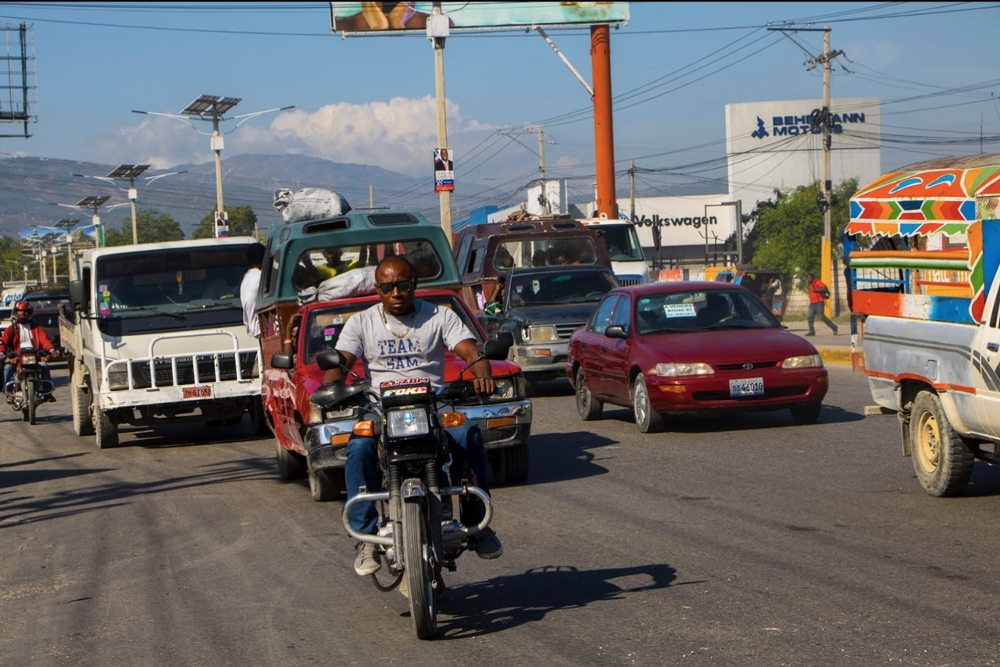
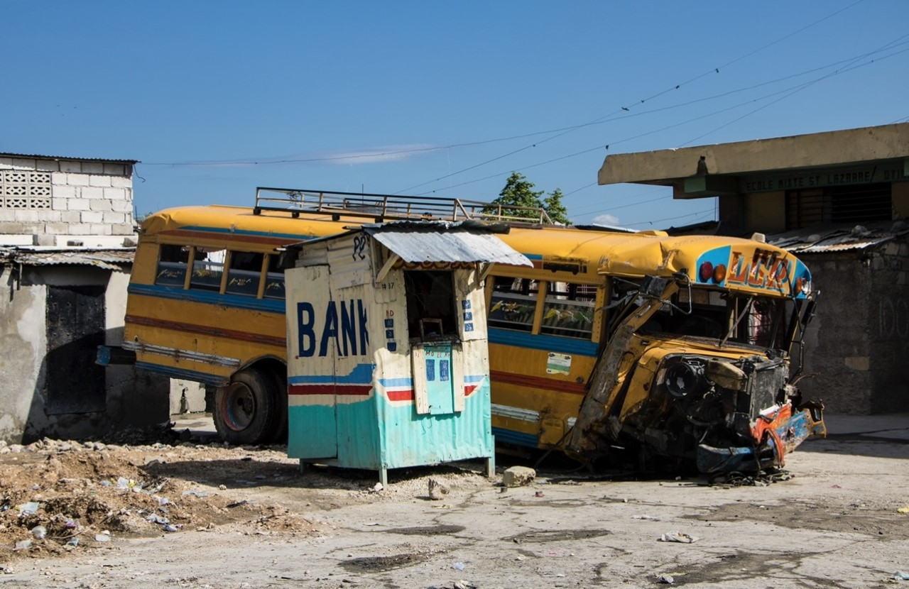
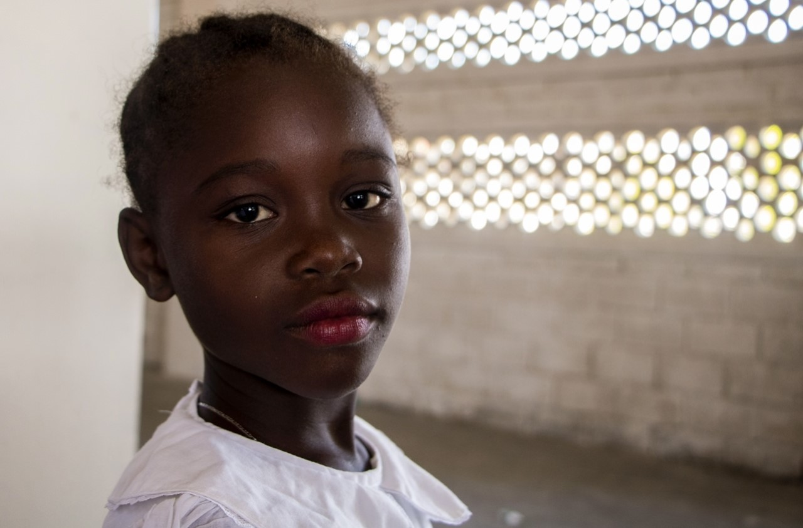

Geographical Location
Image taken by David Repka
Location and Coordinates
Haiti lies in the Caribbean, western one-third of the island of Hispaniola, between the Caribbean Sea and the North Atlantic Ocean, west of the Dominican Republic.
Its geographical coordinates are 19 00 N, 72 25 W
Bordering Countries
Dominican Republic
Bahamas
Cuba
Jamaica
Area
Total
27,750 sq km
Land
27,560 sq km
Water
190 sq km
Natural Hazards
Image taken by David Repka
Earthquakes and Severe Storms
Due to Haiti's geographical location, it lies directly within the hurrican belt which attracts more severe seasonal flooding and storms.
Another Danger Haitians have to worry about is earthquakes. Within the past decade they have been the victim of multiple devastating eaerthquakes resulting in millions of deaths and complete destruction of the land.
Droughts can also be a harm to Haiti. Haiti is almost regularly hit by climatic events that have increased vulnerabilities in the country. In particularly rural areas this can be extreme.
Haitian Culture
Image taken by David Repka
People and Society
The average population in haiti as of July 2021 is 11,198,240 people.
Their main languages consist of Creole and French.
Upwards of 80% of Haitians incorporate vodou into another religion of their choice, however Voudu alone has been recognized as an official religion in 2003.
Life Expectancy at Birth
Total Population
65.61 years
Male
62.94 years
Female
68.31 years